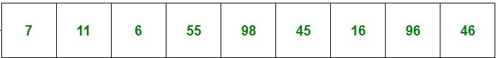

OOP1
KU
24-03-2021
Heute
- Organisatorisches
- static Beispiel10min
- Datenstruktur der Woche - Stack und Queue 10min
- Menti Fragen 10min
- (Tom's Array)++25min
- Klassenaufteilung
- Deep Copy
- Menti Fragen end
Organisatorisches zu Assignment 1
- Ausgabe morgen um 17:00 nach dem VO Stream
- KU-Fragestunde: 31.3.2021
- Deadline: 7.4.2021
static Beispiel
Datenstruktur der Woche
- emtpy()
- size()
- ...
Stack - std::stack
LIFO - last in first out
- top()
- pop()
- push()
Stack - std::stack
Queue - std::queue
FIFO - first in first out
- front()
- back()
- pop()
- push()

Queue - std::queue
Für Assingment 1 sehr hilfreich
Menti Fragen
(Tom's Array)++
Zusammenfassung
- static Beispiel
- static in cpp initialisieren
- inline
- Datenstruktur der Woche - Stack und Queue
- (Tom's Array)++
- Klassenaufteilung
- Deep Copy